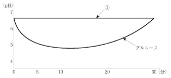

ステファン曲線（Stephan curve）は、糖質摂取後の歯垢pHの経時的変化を示す曲線。1940年代にStephanが発表した。
| 糖質 | 分類 | pH低下 |
|---|---|---|
| スクロース（蔗糖） | 二糖類 | 大きい |
| グルコース（ブドウ糖） | 単糖類 | 大きい |
| フルクトース（果糖） | 単糖類 | 大きい |
| マルトース（麦芽糖） | 二糖類 | 大きい |
| ラクトース（乳糖） | 二糖類 | 中程度 |
| ガラクトース | 単糖類 | 中程度 |
| 物質 | 分類 | pH低下 |
|---|---|---|
| キシリトール | 糖アルコール | なし |
| ソルビトール | 糖アルコール | ほぼなし |
| アスパルテーム | 人工甘味料 | なし |
| マンノース | 単糖類 | ほぼなし |
| デンプン（生） | 多糖類 | 小さい |
| カップリングシュガー | オリゴ糖 | 小さい |
※デンプンは調理（加熱）すると発酵性が上昇する
溶液①あるいはグルコースで洗口後の歯垢中のpHの変化を図に示す。
①に該当するのはどれか。1つ選べ。

【解説】図では①はpH低下がほとんどない（pH 7付近で横ばい）。一方、グルコースは典型的なステファン曲線を示しpH 5付近まで低下後に回復。①のようにpH低下がないのは代用甘味料であり、選択肢の中ではアスパルテーム（人工甘味料）が該当。a〜cは発酵性糖質でpH低下を起こす。eのカップリングシュガーも低発酵性だが、完全に低下しないわけではない。